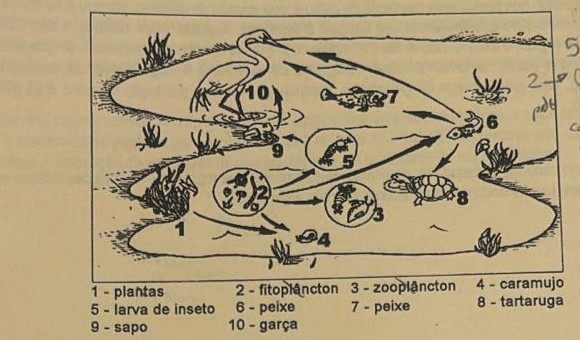
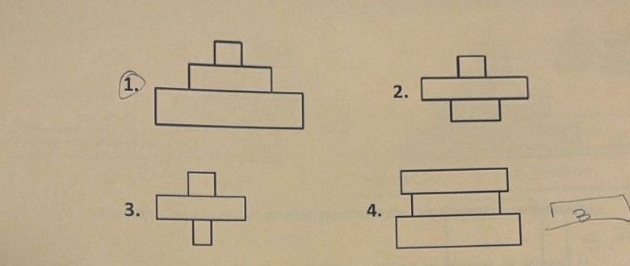
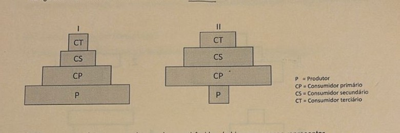

Professora: Kamila
Leia a matéria a seguir:
Cientistas desvendam origem de fungo letal causador de extinção de anfíbios
sex, 11 mai 2018 | 10:14
Pesquisa publicada na Science revela que proliferação do patógeno, iniciada há cerca de cem anos, coincidiu com a expansão global do comércio da carne de rã
Estudo que envolveu 38 instituições de todo o mundo — incluindo a Unicamp, a única representante do Brasil — publicado hoje (11) na capa da revista Science, aponta o Leste da Ásia como a provável origem do fungo letal responsável pelo declínio da população de anfíbios no mundo. Segundo os autores do trabalho, o patógeno surgiu no início do século XX, coincidindo com a expansão global do comércio de anfíbios para restaurantes. A pesquisa é mais uma evidência dos efeitos deletérios da introdução descontrolada de espécies que não estão em seu habitat natural. Calcula-se que o fungo tenha causado a extinção de 200 espécies, 15 das quais no Brasil.
A infecção por Batrachochytrium dendrobatidis (Bd) é considerada a pior doença selvagem de todos os tempos. O fungo letal é o causador de uma doença chamada quitridiomicose, que ataca a pele dos anfíbios e acaba interferindo no batimento cardíaco destes animais. A transmissão da doença é feita pela água ou contato direto entre os animais. O fungo está distribuído em todo o mundo, mas até hoje não se sabia a origem deste patógeno.
Disponível em: https://unicamp.br/unicamp/ju/noticias/2018/05/11/cientistas-desvendam-origem-de-fungo-letal-causador-de-extincao-de-anfibios/
A partir do que foi descrito no texto qual é a relação ecológica entre o fungo Batrachochytrium dendrobatidis e os anfíbios? Justifique sua resposta. Essa relação é classificada como interespecífica ou intraespecífica?
Observe a figura abaixo que representa uma teia alimentar.

Julgue cada proposição como verdadeira (V) ou falsa (F). Caso seja falsa, reescreva-a corretamente.
a) Somente as plantas pertencem ao primeiro nível trófico, produtor.
b) A garça pode ser considerada um consumidor terciário.
c) Na ilustração, o peixe (6) é um consumidor primário e o peixe (7) é um consumidor secundário.
d) Nessa representação, é possível identificar cinco níveis tróficos.
Em diversos ecossistemas, a presença de predadores de topo exerce um papel fundamental na regulação das populações e na manutenção do equilíbrio ecológico. Um exemplo clássico é o desaparecimento de lobos no Parque Nacional de Yellowstone, nos Estados Unidos, que levou à degradação da vegetação nativa, afetando até a erosão dos rios.
Com base nos conhecimentos sobre relações ecológicas e organização das cadeias e teias alimentares, explique por que o extermínio de espécies topo de cadeia, como no caso de lobos de Yellowstone, que são carnívoros, pode desencadear a diminuição da população de plantas, ou seja, de produtores de um ecossistema.
O funcionamento dos ecossistemas (por exemplo, uma floresta ou uma lagoa) é mantido pela entrada de energia, a partir da produção primária, que é transferida para os níveis tróficos superiores pela interação dos organismos.
a) O que é produtividade primária líquida?
b) Explique por que os produtores são fundamentais para a manutenção das cadeias tróficas.
Considere uma pirâmide ecológica com os seguintes níveis tróficos: três árvores, trezentos gafanhotos e duas aves. A partir desses dados, analise as figuras a seguir.

a) Quais figuras representam melhor a pirâmide de energia e de número, respectivamente?
b) Cite dois processos responsáveis pela perda de energia ao longo da cadeia trófica.
As figuras I e II mostram pirâmides ecológicas de biomassa para dois ecossistemas.

a) Indique um ecossistema que cada uma dessas pirâmides de biomassa possa representar.
b) Desenhe as pirâmides de energia correspondentes às pirâmides de biomassa, para os dois ecossistemas indicados.